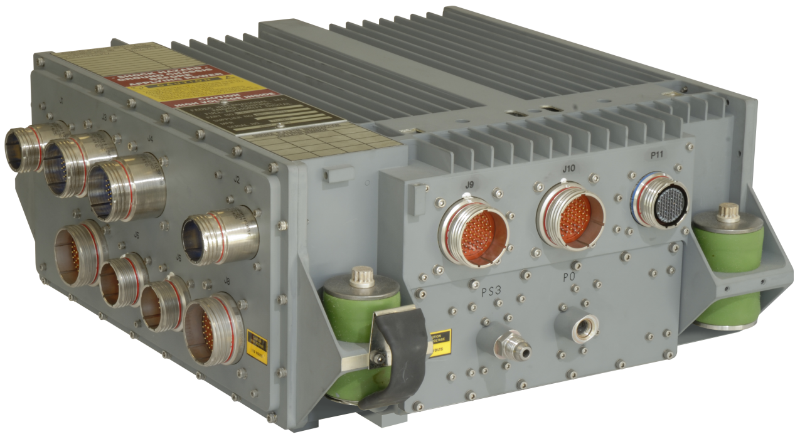
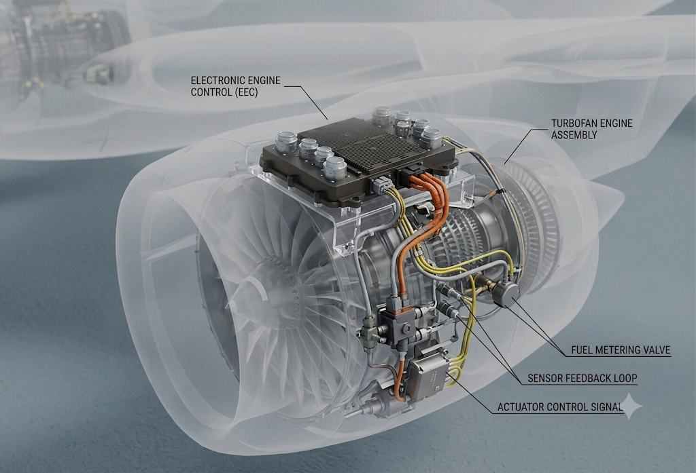
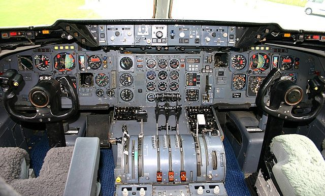
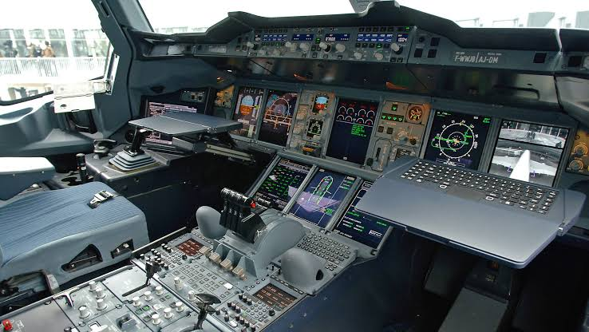
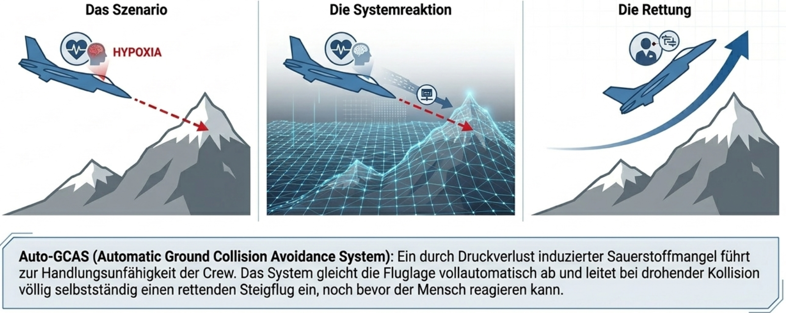

Vom Steuergestänge zum Avionik-Netzwerk — interaktiv durch FADEC, Fly-by-Wire, FMS und KI
Tipp: mit den Pfeiltasten ↑↓ oder Mausrad scrollen · alle Grafiken sind interaktiv
Ein Linienflug dauert rund 10 Stunden (600 Minuten). Wie viel davon steuert der Pilot tatsächlich selbst von Hand?
Untersucht werden Funktionsweise und Redundanzarchitektur der primären Steuerungssysteme
Triebwerksregelung mit voller digitaler Autorität
Elektronische Steuerung mit Flugbereichsschutz
Strategische 4D-Trajektorienplanung in Echtzeit
Soziotechnische Chancen und Risiken zunehmender Autonomie
Vollautomatische Triebwerkssteuerung — keine Mechanik mehr zwischen Schubhebel und Triebwerk

Das „Gehirn": robuste, redundante Recheneinheit am Triebwerk

EEC, Fuel Metering Valve, Sensor-Feedback & Aktuatoren
Strömungsabrisse im Verdichter
Zu hohe Abgastemperaturen
Gefährliche Anlassvorgänge
Schrittweise digitalisiert — bis zur vollen digitalen Autorität ohne mechanisches Backup. Rote Marken = Meilensteine
Piloteneingaben werden zu elektrischen Signalen — irreversibel, mit simuliertem Steuergefühl

Analoge Instrumente, mechanische Übertragung (Kabel/Schubstangen)

Sidesticks, Displays, voll elektronische Steuerung
Kein echtes Wind-Feedback — ein Federpaket („Feel Unit") erzeugt die Gegenkraft künstlich, proportional zum Ausschlag[1,11]
Wie viel Prozent der schweren Flugunfälle gehen auf menschliches Versagen zurück?
Regler ziehen = Stick ziehen. Vergleich „harte" vs. „weiche" Limits beim Querneigungswinkel
Überschreiten unmöglich — bleibt bei 67° (graue Marke = Eingabewunsch)
Widerstand ab 35°, aber jederzeit überstimmbar — Pilot entscheidet
Zwei Sicherheitsphilosophien: Maschine schützt absolut ⟷ Mensch entscheidet absolut[3]
Hochautomatisiert, aber nicht autonom — kein echtes Situationsverständnis, nur reaktiv

Szenario → Systemreaktion → Rettung: autonomer Steigflug bei drohender Kollision
+ FORDEC: KI als virtueller Co-Pilot — Was-wäre-wenn-Szenarien, entlastet die Crew in Stresssituationen
Mehr Automatik → weniger Übung; bei abrupter Rückgabe der Kontrolle wird es kritisch[8,24]
Fähigkeiten verkümmern, wenn die Automatik fast alles macht
Abrupte Kontrollrückgabe im Stress als Kernrisiko
Welcher reale Unfall steht hinter der Modus-Konfusions-Folie?
DO-178C passt schlecht zu neuronalen Netzen
Geprüftes „eingefrorenes" Modell am Boden + Echtzeit-Wächter im Flug
Der Pilot bleibt Entscheider. Single-Pilot-Betrieb muss beherrsch- und zulassbar sein — verlässliche KI-Prüfverfahren sind die Voraussetzung
Quantensensoren + Erdmagnetfeld + KI → präzise, unstörbare Position ganz ohne GPS-Signal
KI erkennt Fehler in Echtzeit und rekonfiguriert Systeme automatisch im Flug
Erst Frachtflüge — sobald Learning- & Runtime-Assurance nachweisbar zulassbar sind
Grafik-Herkunft direkt an den Abbildungen angegeben (u. a. Civil Avionics Systems [4], BAA-Training, ARINC 664P7 [13]). Schaubilder eigens nachgezeichnet. 3D-A320-Modell: FlightAirMap-3dmodels (GPLv2). Cockpit-Fotos: Wikimedia Commons
Das interaktive Recap (klickbares Flugzeug · Datenfluss · Automatisierungs-Regler), der Klausur-Spickzettel und ein Fachbegriffe-Glossar liegen als eigenes Lernmaterial vor.
📖 Klausur-Lernmaterial öffnenHilfsfolien für die Diskussion — nur bei Nachfrage einblenden. ⚠ = zuvor offene Lücke, jetzt beantwortbar.
Bis zur Mindestdrehzahl aus Flugzeugbatterie/Bordnetz; erst danach übernimmt der PMG. „100 % autark" gilt also erst im Betrieb, nicht beim Start.
= Triebwerksausfall. Zertifizierbar, weil die Kanäle unabhängig & dissimilar ausgelegt sind (Wahrscheinlichkeit extrem klein) und das zweite Triebwerk mit eigener FADEC unabhängig weiterläuft.
Triebwerkstyp-abhängig: Rolls-Royce regelt meist auf EPR (Druckverhältnis), GE/PW oft auf N1 (Fandrehzahl). Beide sind Schub-Maße.
fail-operational: bleibt nach einem Fehler voll funktionsfähig (nahtlos Kanal B). fail-safe: geht in einen definierten sicheren Zustand. FADEC ist fail-operational.
Normal = voller Schutz. Alternate = reduzierter Schutz nach Sensor-/Rechnerausfällen. Direct = kein Schutz, Stick steuert Flächen direkt; darunter mechanisches Minimal-Backup.
AF447 (2009): vereiste Pitotsonden → ungültige Geschwindigkeit → Degradation auf Alternate Law → Strömungsabriss bei Überforderung der Crew.
Wertungsfrage, beide verteidigen: Airbus = Maschine verhindert kritische Lagen absolut; Boeing = Pilot behält die Letztautorität für unvorhergesehene Fälle. „Sicherheit" hängt vom Szenario ab.
ARINC 429 = einfacher, unidirektionaler Low-Rate-Bus. AFDX/ARINC 664 = Ethernet mit Virtual Links; deterministisch = garantierte max. Latenz, erzwungen über die BAG (Bandwidth Allocation Gap).
Rückwirkungsfreiheit: räumliche & zeitliche Trennung der Applikationen — eine abstürzende App darf keine andere beeinflussen (Sicherheitsnachweis auf einem Zentralrechner).
EHA = elektrisch angetriebene lokale Hydraulikpumpe → Hydraulikzylinder. EMA = rein elektromechanisch (Motor + Spindel), gar keine Hydraulik.
Die direkte Rückmeldung über die tatsächlichen aerodynamischen Kräfte / den Staudruck — das „Feel" ist rein simuliert und richtet sich nicht nach der realen Last.
Durch mehrfache, dissimilare Redundanz gegen Common-Mode-Failures (unterschiedliche Hardware/Software) + Verfügbarkeitsrechnung — nicht durch reine Vervielfachung gleicher Kanäle.
Gar nicht — echtes Voting braucht ≥ 3 Kanäle (Boeing Triple-Triple). Airbus Duo-Duplex = Command-/Monitor-Prinzip: bei Diskrepanz schaltet der Kanal ab.
DAL A = höchste Design-Kritikalität; Catastrophic ≤ 10⁻⁹/h. CS 25.671(c): ein Single Failure darf die sichere Flugfähigkeit nicht verhindern.
Rekursiver Schätzer, der eine Modellvorhersage (IRS) und eine verrauschte Messung (GPS) optimal gewichtet fusioniert. Ergebnis: die beste Positionsschätzung trotz Rauschen.
Das IRS integriert Beschleunigungen → Fehler wachsen mit der Zeit (Drift), mit einer ungedämpften Schuler-Periode ≈ 84 min. GPS stützt und begrenzt die Drift.
CI = zeitabhängige Kosten ÷ Treibstoffkosten → optimale Reisegeschwindigkeit. ToD = FMS-berechneter Sinkflugpunkt für einen treibstoffsparenden Leerlauf-Sinkflug.
Die innere (Fluglage) ist schneller/höhere Bandbreite; die äußere (Bahn) langsamer. Trennung wegen Stabilität & Bandbreitentrennung.
Drei Komponenten: Flugzeug + Crew + Flughafen (Anlage/ILS). Alle drei müssen die Kategorie erfüllen.
DO-178C verlangt erschöpfende, nachvollziehbare Testbarkeit. Neuronale Netze sind Black-Box und nicht deterministisch begründbar → klassische Struktur greift nicht.
Learning: am Boden — Trainingsdaten/Modell geprüft & eingefroren. Runtime: im Flug — ein deterministischer Wächter überwacht die KI und greift ein.
Drei Punkte: Beherrschbarkeit (Incapacitation, Workload-Spitzen), Zulassbarkeit (Nachweis), Human Factors (Rückfall auf einen Menschen).
Facts · Options · Risks · Decision · Execution · Check. KI liefert schnelle Was-wäre-wenn-Auswertungen im Hintergrund und entlastet die Crew.
Fokus auf die primären Steuerungssysteme der zivilen Verkehrsluftfahrt; Militär nur als Referenz (Auto-GCAS, Power-by-Wire-Pionier). Bewusste Eingrenzung des Umfangs.
Aus Unfallstatistiken (u. a. Billings, NTSB). Es ist eine Bandbreite (je nach Definition ~57–80 %) — als Größenordnung robust, nicht als exakter Wert.
Sicherheit = gute Technik + fähiger Mensch. Automation verschiebt die Rolle des Piloten (zum Systemmanager), ersetzt ihn aber nicht.